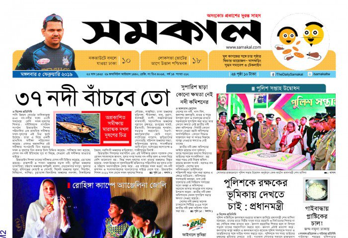

the news paper
Prothom Alo
উত্তর কোরিয়ার রপ্তানিযোগ্য অস্ত্র উত্তর কোরিয়ার ওপর আন্তর্জাতিক নিষেধাজ্ঞা পর্যবেক্ষণকারী জাতিসংঘের বিশেষজ্ঞ প্যানেলের সমন্বয়কারী ছিলেন হিউ গ্রিফিথস। বর্তমানে নিষেধাজ্ঞাবিষয়ক স্বাধীন পরামর্শদাতা হিসেবে কাজ করা গ্রিফিথস বলেন, উত্তর কোরিয়ার হাতে গত শতকের পঞ্চাশের দশকে তৈরি
নিচে বিস্তারিত দেখুনjugantor
রোববার ইরানের উচ্চপদস্থ সামরিক কর্মকর্তা কিয়েমার্স হায়দারি দাবি করেছেন, ইসরাইলের তেল আবিব এবং হাইফা শহরে হামলা চালানোর জন্য ‘আরশ-২’ নামে বিশেষ ড্রোন তৈরি করেছে ইরান।ইরানিয়ান গ্রাউন্ড ফোর্সের কর্মকর্তা কিয়েমার্স হায়দারি এ ব্যাপারে বলেন,কর্মকর্তা কিয়েমার্স হায়দারি saurav shuvo
নিচে বিস্তারিত দেখুনSamakal
আনুষ্ঠানিকতার মধ্য দিয়ে ব্রিটেনের রাজা হিসেবে অভিষেক হয়েছে তৃতীয় চার্লসের। মা দ্বিতীয় এলিজাবেথের মৃত্যুর পর প্রথাগতভাবেই তাঁর উত্তরাধিকারী হন তাঁর বড় ছেলে তৃতীয় চার্লস। কেবল আনুষ্ঠানিকতা বাকি ছিল। শনিবার লন্ডনের সেন্ট জেমস প্যালেসে শেষ হলো সেই আনুষ্ঠানিকতারও।
নিচে বিস্তারিত দেখুনProthom Alo
উত্তর কোরিয়ার রপ্তানিযোগ্য অস্ত্র উত্তর কোরিয়ার ওপর আন্তর্জাতিক নিষেধাজ্ঞা পর্যবেক্ষণকারী জাতিসংঘের বিশেষজ্ঞ প্যানেলের সমন্বয়কারী ছিলেন হিউ গ্রিফিথস। বর্তমানে নিষেধাজ্ঞাবিষয়ক স্বাধীনপরামর্শদাতা হিসেবে কাজ করা গ্রিফিথস বলেন, উত্তর কোরিয়ার হাতে গত শতকের পঞ্চাশের দশকে তৈরি
নিচে বিস্তারিত দেখুনjugantor
রোববার ইরানের উচ্চপদস্থ সামরিক কর্মকর্তা কিয়েমার্স হায়দারি দাবি করেছেন, ইসরাইলের তেল আবিব এবং হাইফা শহরে হামলা চালানোর জন্য ‘আরশ-২’ নামে বিশেষ ড্রোন তৈরি করেছে ইরান।ইরানিয়ান গ্রাউন্ড ফোর্সের কর্মকর্তা কিয়েমার্স হায়দারি এ ব্যাপারে বলেন,কর্মকর্তা কিয়েমার্স হায়দারি saurav shuvo
নিচে বিস্তারিত দেখুনSamakal
আনুষ্ঠানিকতার মধ্য দিয়ে ব্রিটেনের রাজা হিসেবে অভিষেক হয়েছে তৃতীয় চার্লসের। মা দ্বিতীয় এলিজাবেথের মৃত্যুর পর প্রথাগতভাবেই তাঁর উত্তরাধিকারী হন তাঁর বড় ছেলে তৃতীয় চার্লস। কেবল আনুষ্ঠানিকতা বাকি ছিল। শনিবার লন্ডনের সেন্ট জেমস প্যালেসে শেষ হলো সেই আনুষ্ঠানিকতারও।
নিচে বিস্তারিত দেখুন